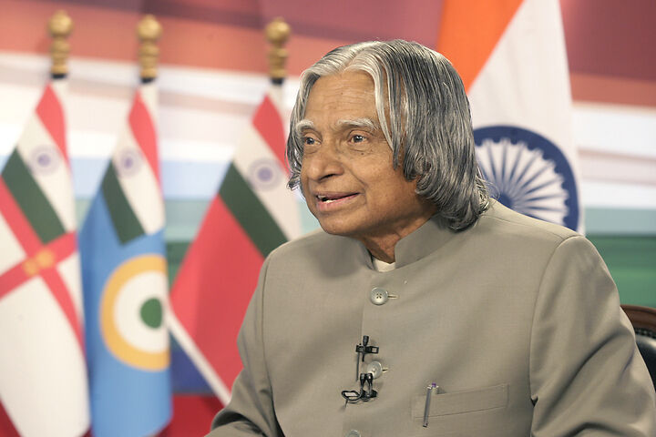

Orientation
The first part is all about the life of young Kalam. There is a mix of his interactions with his family, friends and teachers. The lessons he learned in through his tutelage and upbringing in Rameshwaram are beautifully dotted with black and white photographs of the period.
It also covers his early education leading up to his graduation in aeronautical engineering degree from the Madras Institute of Technology. He hailed from a working-class Tamil Muslim family and the book is an interesting peek into the harmonious commingling of Hindus and Muslims of India celebrating the multi-ethnic, multi-religious and composite wealth India. As a boy, he sold newspapers to help his brother and to overcome his own financial challenges while attaining his education. Through the text, the need and support of family and friends are eulogized and it certainly proved to be the cornerstone of his life’s successes.
Creation
The next part concentrated on his progress as a man of science and innovation. It revolves around his work with defence and space projects.
After nearly four years with DRDO, he joined the Indian Space Research Organization (ISRO) where he was mentored by some of the brightest Indian minds of Science like Professor Vikram Sarabhai, Dr Werner Van Braun, and Professor Satish Dhawan etc. He would go on to be part of several important satellite launches during his stint with DRDO with the crowning jewel being the Project Director of SLV-III, India’s first indigenous Satellite Launch Vehicle (1980). Here, Kalam has incorporated minutest of scientific acronyms, details etc. and tried to establish a window into his world of science and innovation. Another noticeable thing is his interactions with the common folks in such an organization and outside.
Propitiation
In 1982, Kalam changes his place of work to rejoin the defence labs at the DRDO as its Director. Kalam goes on to give a firsthand account of some of the most incredible scientific innovations of the country like Polar Satellite Launch Vehicle (PSLV), the Integrated Guided Missile Programme of India and its constituent missiles like Akaash, Naga, Trishul and especially Agni, the Indian Intercontinental Ballistic Missile series.
He even produced healthcare products using the same missile technology. He earned his moniker of ‘Missile-man of India’ for his achievement in this phase of his life. His insistence on a participative model of management was based on bringing the best out of every person. It made him a scientist with a soul
The section also pays tribute to the greatest scientific minds in the Indian Space journey and has a celebratory and nostalgic feel to it. Also, we again get to see his real-life work through many black and white snapshots
Contemplation
The last part starts with him becoming the Scientific Advisor to India’s Defense Minister in 1992. In this phase of life, he contributed heavily to the nation becoming a nuclear power and reaching its nuclear destiny with the successful nuclear tests at Pokhran, Rajasthan in 1998.
“To succeed in your mission, you must have a single-minded devotion to your goal.”
The section also notes ideas, his contemplations and advice for the future of India culminating into Kalam’s -Vision 2020. A flag post of India attaining of self-sufficiency in innovation & technology vision. A perfect epilogue to an inspirational life journey.